BF04 — NEFT, RTGS, IMPS Aur UPI: Paisa Bhejne Ke 4 Tariko Mein Farak Kya Hai?
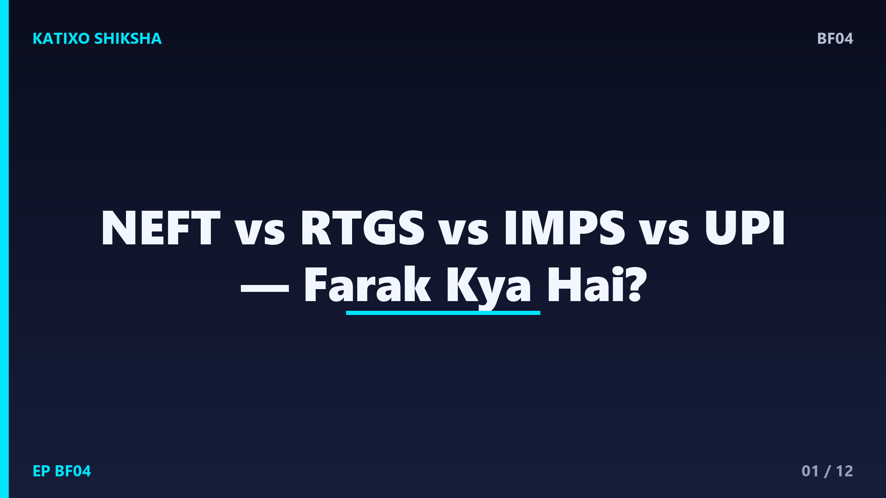
Slide 1दोस्तों, जब आप online पैसा भेजते हो, तो app अक्सर पूछती है — NEFT, RTGS, IMPS या UPI? और ज़्यादातर लोग बिना समझे कोई भी चुन लेते हैं। पर इन चारों में काफ़ी फ़र्क है — कौन सा कब, किसके लिए और कितने पैसे तक चलता है, ये जानना आपका टाइम और पैसा दोनों बचा सकता है। आज Katixo KhojLab की इस finance explainer में हम चारों को आसान भाषा में, examples के साथ comparing करेंगे, ताकि अगली बार आप सही चुनाव करो। चलो शुरू करें।
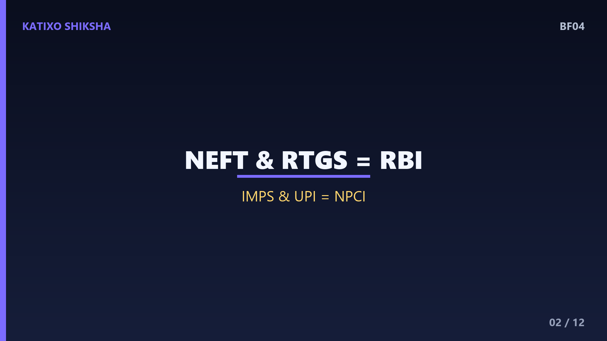
Slide 2पहले एक बड़ी बात — ये चारों ही पैसे भेजने के तरीक़े हैं, पर इन्हें चलाने वाले अलग हैं। NEFT और RTGS को सीधे RBI यानी Reserve Bank of India चलाता है। और IMPS तथा UPI को चलाता है NPCI, यानी National Payments Corporation of India. चारों safe और regulated हैं। फ़र्क है इनकी speed में, timing में, पैसे की limit में, और किस काम के लिए ये बने हैं। एक-एक करके समझते हैं, फिर आख़िर में एक comparison से सब साफ़ हो जाएगा।
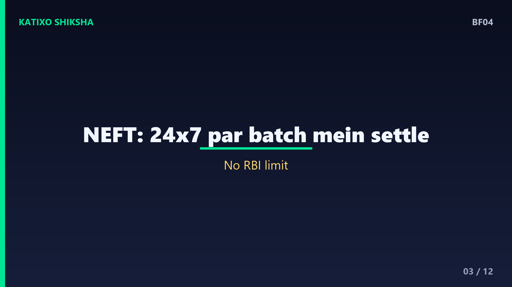
Slide 3सबसे पहले NEFT — National Electronic Funds Transfer. पहले ये batch में चलता था, यानी requests इकट्ठा होकर थोड़े-थोड़े समय बाद process होती थीं। अब NEFT चौबीसों घंटे, सातों दिन उपलब्ध है, पर ये आधे-आधे घंटे के batch में settle होता है, तो पैसा पहुँचने में थोड़ा समय लग सकता है। NEFT में कोई minimum या maximum limit RBI की तरफ़ से तय नहीं है, हालाँकि bank अपनी limit रख सकते हैं। ये तब अच्छा है जब आपको बहुत जल्दी नहीं, बस भरोसेमंद transfer चाहिए।
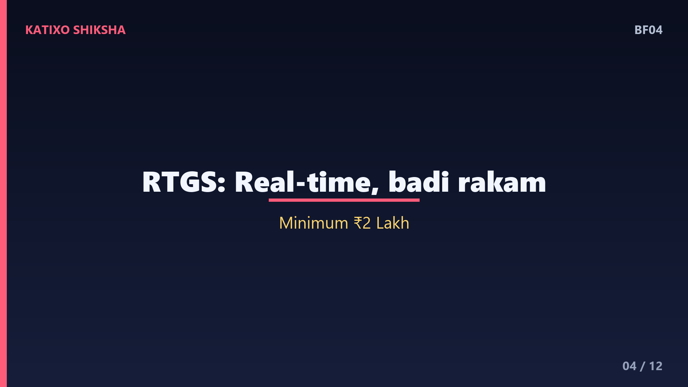
Slide 4अब RTGS — Real Time Gross Settlement. नाम में ही जवाब है — real time, यानी पैसा तुरंत और एक-एक करके settle होता है, batch में नहीं। ये बना है बड़ी रकम के लिए। RBI के नियम के मुताबिक़ RTGS में minimum amount है दो लाख रुपये, यानी इससे कम इसमें भेज ही नहीं सकते, और ऊपर की कोई fixed limit नहीं। ये भी अब चौबीसों घंटे चलता है। तो जब बहुत बड़ी रकम तुरंत भेजनी हो — जैसे घर या property की payment — तो RTGS सबसे सही है।
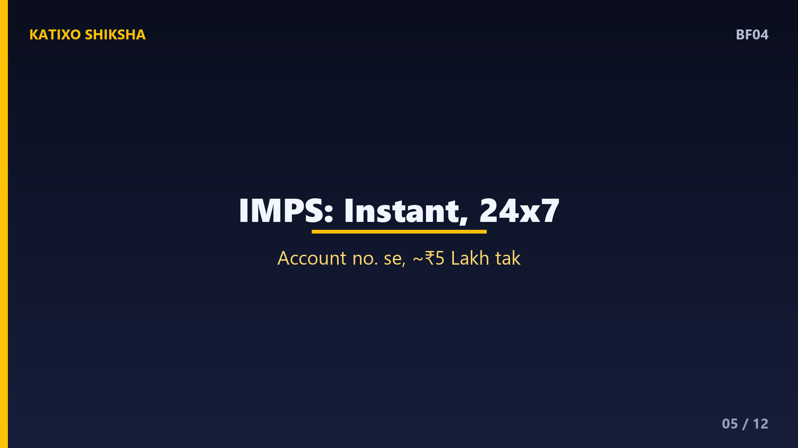
Slide 5अब IMPS — Immediate Payment Service, जिसे NPCI चलाता है। नाम के मुताबिक़ ये immediate है, यानी पैसा तुरंत पहुँचता है, और चौबीसों घंटे चलता है। ये बना है छोटी और मध्यम रकम के instant transfer के लिए। IMPS में आम तौर पर एक transaction में पाँच लाख रुपये तक भेज सकते हो, हालाँकि limit bank पर निर्भर करती है। UPI आने से पहले IMPS ही instant transfer का सबसे बड़ा तरीक़ा था, और आज भी कई जगह, खासकर account number से बड़ी रकम भेजने में, ये बहुत काम आता है।
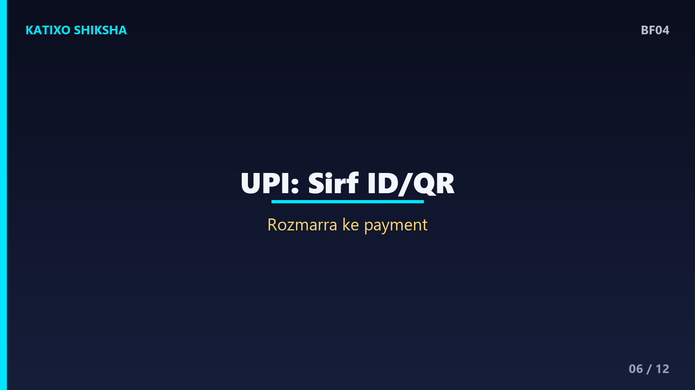
Slide 6और आख़िर में UPI — Unified Payments Interface, जिसे भी NPCI चलाता है, और जो आज सबसे popular है। ये भी instant और चौबीसों घंटे है, पर इसका जादू है आसानी — बस UPI ID या QR scan, account number और IFSC की झंझट नहीं। UPI रोज़मर्रा के छोटे payment के लिए बना है — चाय, सब्ज़ी, online shopping। आम तौर पर इसकी daily limit एक लाख रुपये तक होती है। तो जहाँ NEFT, RTGS, IMPS को account details चाहिए, वहीं UPI सिर्फ़ एक ID या QR से काम कर देता है।
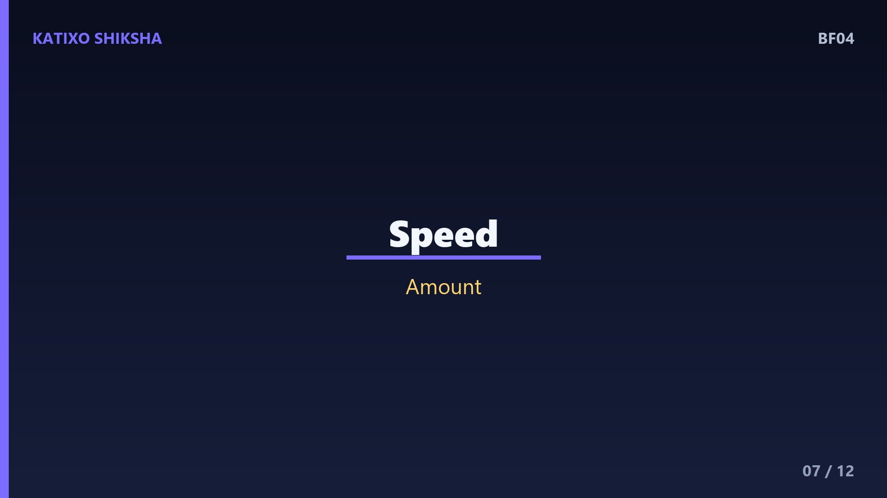
Slide 7अब चारों को एक साथ रखकर देखो, ताकि फ़र्क crystal clear हो जाए। Speed — RTGS, IMPS और UPI तुरंत, NEFT थोड़ा slow batch में। बड़ी रकम — RTGS, कम से कम दो लाख से। रोज़मर्रा के छोटे payment — UPI, आसान और तेज़। Account number से instant मध्यम रकम — IMPS. Regulator — NEFT और RTGS पर RBI, IMPS और UPI पर NPCI. चारों ही चौबीसों घंटे चलते हैं अब। याद रखो, सही tool चुनना ही समझदारी है।
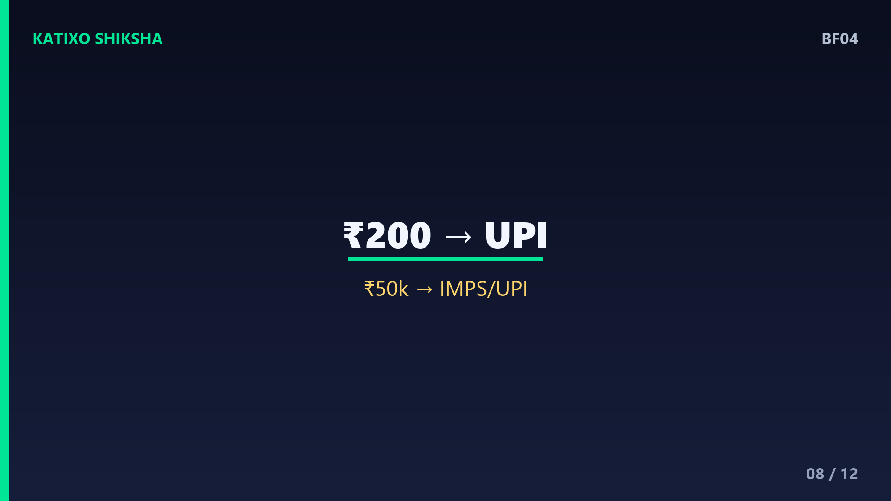
Slide 8अब एक practical example से समझते हैं किसे कब चुनना है। मान लो आपको दुकानदार को 200 रुपये देने हैं — यहाँ UPI सबसे सही, QR scan करो, हो गया। मान लो दोस्त को 50 हज़ार रुपये उसके account number पर instant भेजने हैं — IMPS या UPI दोनों चलेंगे। और मान लो आप घर खरीद रहे हो और 25 लाख रुपये एक साथ भेजने हैं — यहाँ RTGS perfect है, क्योंकि वो बड़ी रकम के लिए ही बना है, और तुरंत settle करता है। काम के हिसाब से tool, बस यही फ़ॉर्मूला है।
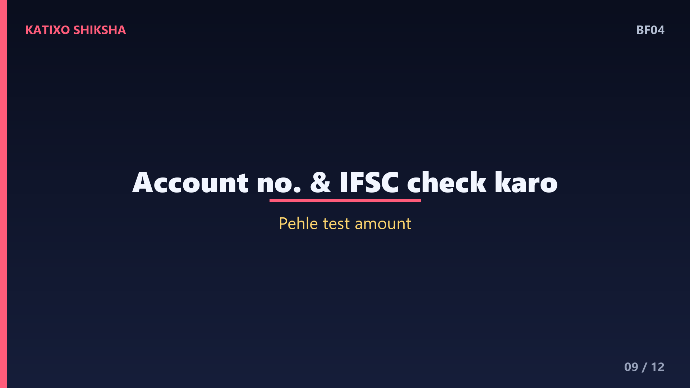
Slide 9अब कुछ practical tips और common गलतियाँ। पहली — NEFT, RTGS और IMPS में आपको receiver का account number और IFSC code सही-सही डालना होता है, एक भी अंक गलत हुआ तो पैसा गलत जगह जा सकता है, इसलिए हमेशा दोबारा check करो। दूसरी — बड़ी रकम भेजते समय पहले एक छोटा test amount भेजकर confirm कर लो कि details सही हैं। तीसरी — charges का ध्यान रखो। UPI आम लोगों के लिए free है, पर RTGS या NEFT पर कुछ bank छोटा charge ले सकते हैं, हालाँकि online पर अक्सर ये free होता है।
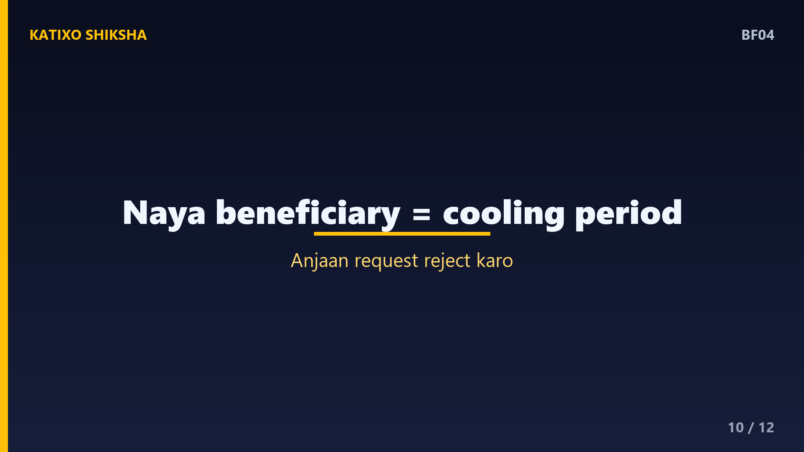
Slide 10एक और ज़रूरी बात — beneficiary add करना। NEFT, RTGS और IMPS में किसी नए इंसान को बड़ी रकम भेजने से पहले अक्सर उसे beneficiary के तौर पर add करना पड़ता है, और कई bankें safety के लिए नए beneficiary पर कुछ घंटे की cooling period रखती हैं। ये थोड़ा झंझट लगता है, पर ये आपकी ही सुरक्षा के लिए है, ताकि fraud रोका जा सके। UPI में ये step आसान है, पर वहाँ भी अनजान की payment request कभी approve मत करो। safety हमेशा पहले।
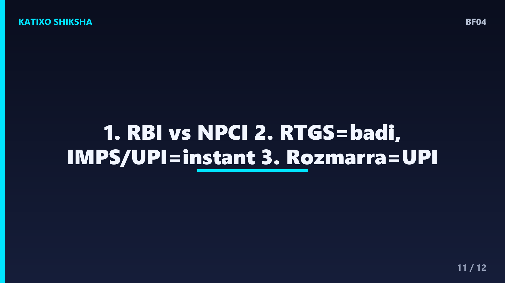
Slide 11तो चलो एक quick recap करते हैं, तीन points में। एक — NEFT और RTGS को RBI चलाता है, और IMPS तथा UPI को NPCI, और चारों अब चौबीसों घंटे चलते हैं। दो — RTGS बड़ी रकम के लिए, कम से कम दो लाख से, IMPS और UPI instant छोटी-मध्यम रकम के लिए, और NEFT भरोसेमंद पर थोड़ा slow। तीन — रोज़मर्रा के छोटे payment के लिए UPI सबसे आसान, क्योंकि सिर्फ़ ID या QR चाहिए, account number नहीं।
Slide 12तो दोस्तों, अब जब app पूछेगी NEFT, RTGS, IMPS या UPI, तो आप confuse नहीं होगे — आप काम के हिसाब से सही option चुनोगे। चाय के लिए UPI, बड़ी property payment के लिए RTGS, बस यही समझदारी है। और हमेशा details दोबारा check करना मत भूलना। Aisi aur simple finance explainers ke liye Katixo KhojLab ko subscribe karein! मिलते हैं अगले episode में। Ye general educational info hai, financial advice nahi.